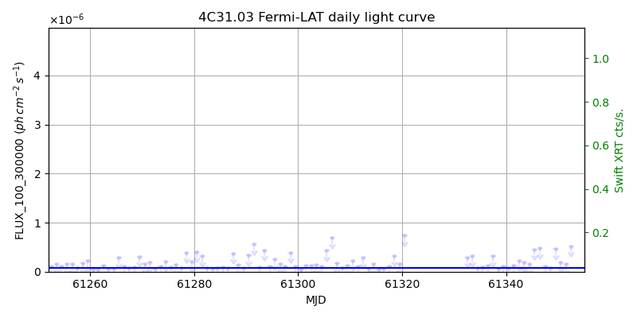
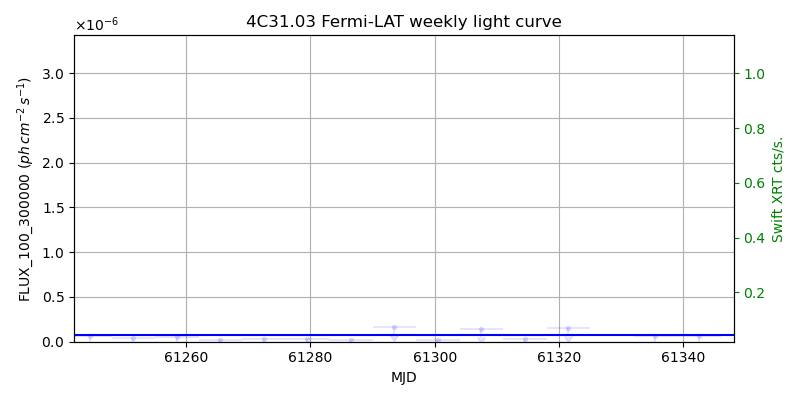
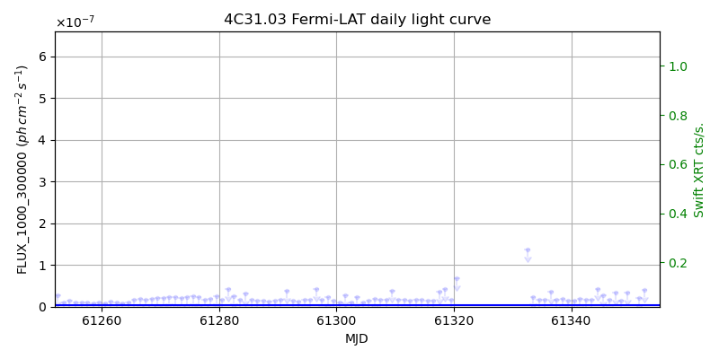
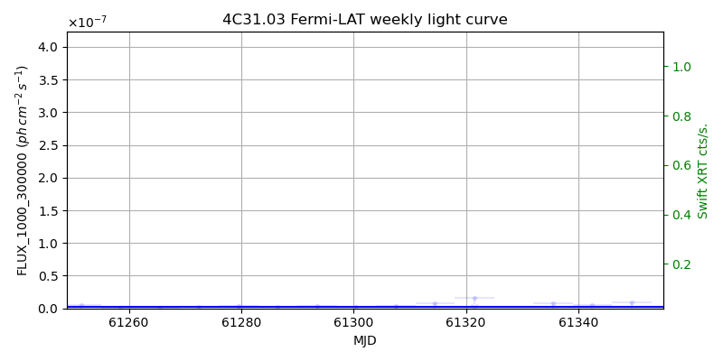

LAT Lightcurve site: https://fermi.gsfc.nasa.gov/ssc/data/access/lat/msl_lc/source/4C_31d03
Swift site: https://www.swift.psu.edu/monitoring/source.php?source=4C31.03
NED: Query
Time of last update of this page: UT: 2026-11-13 16:11 (MJD: 61357.675)
| Property | Value |
|---|---|
| R.A. | 1:12:50.40 |
| Dec. | 32:08:16.8 |
| z | 0.603 |
| 3FGL SpectrumType | PowerLaw |
| 3FGL PL Index | 2.36 |
| 3FGL Flux_100_300000 | 7.01e-08 1 / (s cm2) |
| 3FGL Flux_1000_300000 | 3.04e-09 1 / (s cm2) |
| 3FGL Flux >200 GeV | 2.22e-12 1 / (s cm2) |
| 3FGL Extrap. Crab >200 GeV | 0.01 |
| 3FGL Flux After EBL Absorption >200GeV | 2.12e-13 1 / (s cm2) |
| 3FGL EBL Crab Fraction >200GeV | 0.00 |

| MJD | dMJD | Flux | dFlux | Frac3FGL | FracCrab>200GeV | EBLFracCrab>200GeV |
|---|---|---|---|---|---|---|
| 61348.50 | 0.50 | 8.16e-08 | 0.00e+00 | 0.00 | 0.00 | 0.00 |
| 61349.50 | 0.50 | 4.63e-07 | 0.00e+00 | 0.00 | 0.00 | 0.00 |
| 61350.50 | 0.50 | 1.95e-07 | 0.00e+00 | 0.00 | 0.00 | 0.00 |
| 61351.50 | 0.50 | 1.50e-07 | 0.00e+00 | 0.00 | 0.00 | 0.00 |
| 61352.50 | 0.50 | 5.19e-07 | 0.00e+00 | 0.00 | 0.00 | 0.00 |

| MJD | dMJD | Flux | dFlux | Frac3FGL | FracCrab>200GeV | EBLFracCrab>200GeV |
|---|---|---|---|---|---|---|
| 61314.50 | 3.50 | 3.00e-08 | 0.00e+00 | 0.00 | 0.00 | 0.00 |
| 61321.50 | 3.50 | 1.49e-07 | 0.00e+00 | 0.00 | 0.00 | 0.00 |
| 61335.50 | 3.50 | 6.02e-08 | 0.00e+00 | 0.00 | 0.00 | 0.00 |
| 61342.50 | 3.50 | 6.75e-08 | 0.00e+00 | 0.00 | 0.00 | 0.00 |
| 61349.50 | 3.50 | 3.14e-08 | 0.00e+00 | 0.00 | 0.00 | 0.00 |

| MJD | dMJD | Flux | dFlux | Frac3FGL | FracCrab>200GeV | EBLFracCrab>200GeV |
|---|---|---|---|---|---|---|
| 61348.50 | 0.50 | 1.39e-08 | 0.00e+00 | 0.00 | 0.00 | 0.00 |
| 61349.50 | 0.50 | 3.34e-08 | 0.00e+00 | 0.00 | 0.00 | 0.00 |
| 61350.50 | 0.50 | -1.00e+00 | 0.00e+00 | 0.00 | 0.00 | 0.00 |
| 61351.50 | 0.50 | 2.18e-08 | 0.00e+00 | 0.00 | 0.00 | 0.00 |
| 61352.50 | 0.50 | 3.96e-08 | 0.00e+00 | 0.00 | 0.00 | 0.00 |

| MJD | dMJD | Flux | dFlux | Frac3FGL | FracCrab>200GeV | EBLFracCrab>200GeV |
|---|---|---|---|---|---|---|
| 61314.50 | 3.50 | 7.47e-09 | 0.00e+00 | 0.00 | 0.00 | 0.00 |
| 61321.50 | 3.50 | 1.67e-08 | 0.00e+00 | 0.00 | 0.00 | 0.00 |
| 61335.50 | 3.50 | 7.46e-09 | 0.00e+00 | 0.00 | 0.00 | 0.00 |
| 61342.50 | 3.50 | 5.07e-09 | 0.00e+00 | 0.00 | 0.00 | 0.00 |
| 61349.50 | 3.50 | 9.78e-09 | 0.00e+00 | 0.00 | 0.00 | 0.00 |
--------------------------------------------------------- Using user-supplied coords: 1:12:50.40 32:08:16.8 2000 --------------------------------------------------------- FLWO UT night of: 2026-11-14 Local Sid. @ Midnight: 03:09 Sunset (-15.0) (local, UT): 18:35 01:35 Sunrise (-15.0) (local, UT): 05:42 12:42 Moonrise (local, UT): Moonset (local, UT): 20:50 03:50 Moon phase: 0.22 --------------------------------------------------------- AzTime LSID UT Obj_el Obj_az Mn_el Mn_az Sep. --------------------------------------------------------- 18:35 21:44 01:35 45.9 74.6 20.1 218.2 106.3 19:05 22:14 02:05 52.1 76.7 16.0 223.7 106.1 19:35 22:44 02:35 58.3 78.7 11.6 228.6 105.9 20:05 23:14 03:05 64.6 80.6 6.9 233.2 105.7 20:35 23:44 03:35 70.9 82.2 2.0 237.3 105.5 21:05 00:14 04:05 77.3 83.3 -2.2 241.2 105.3 21:35 00:44 04:35 83.6 82.5 -9.0 244.8 105.1 22:05 01:14 05:05 89.4 355.0 -14.6 248.2 104.8 22:35 01:44 05:35 83.5 277.4 -20.4 251.4 104.5 23:05 02:14 06:05 77.2 276.7 -26.2 254.5 104.3 23:35 02:44 06:35 70.8 277.8 -32.1 257.5 104.0 00:05 03:14 07:05 64.5 279.5 -38.1 260.6 103.7 00:35 03:45 07:35 58.2 281.3 -44.2 263.8 103.4 01:05 04:15 08:05 52.0 283.3 -50.2 267.1 103.1 01:35 04:45 08:35 45.8 285.4 -56.3 270.9 102.8 02:05 05:15 09:05 39.6 287.7 -62.4 275.3 102.5 02:35 05:45 09:35 33.6 290.1 -68.4 281.1 102.2 03:05 06:15 10:05 27.6 292.7 -74.2 289.9 101.8 03:35 06:45 10:35 21.8 295.4 -79.6 306.2 101.5 04:05 07:15 11:05 16.1 298.4 -83.2 343.5 101.2 04:35 07:45 11:35 10.6 301.6 -82.1 35.1 100.9 05:05 08:15 12:05 5.3 305.1 -77.4 61.2 100.6 05:35 08:45 12:35 0.5 308.8 -71.8 73.4 100.3 05:42 08:52 12:42 -0.4 309.7 -70.5 75.2 100.2 --------------------------------------------------------- Dark hours >55 deg.: 4.01 srcstart (UT): 2026-11-14 03:50 srcend (UT): 2026-11-14 07:50